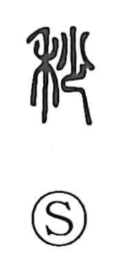

秒

Uncategorized
Kun: nogi, wazuka | On: byo
second ・ slight ・ awn
Explanation
A compound graph joining 禾, the grain plant, with 少, few. The Shuowen defines it as the awn—the fine beard that sprouts from the tip of a rice ear. Because an awn is exceedingly thin and slight, the character came to suggest what is minute or faint, and from this sense of minuteness it was applied to the “second,” a very small unit for measuring time or angle, the sixtieth part of a minute.